2.1 Data preparation
The following data preparations are the basis for all analyses related to the Bulls Eye for Athletes (BEA) study. Code for scale step alterations and some of the modified data frames are presented next to their related sub-analysis to make the workflow more comprehensible.
Code
#loading bulls eye for athletes dataset
BullsEye_merged_data_final_without_comp_level <- read_excel("BullsEye_merged_data_final.xlsx")
rename <- dplyr::rename
#renaming bulls eye items from Swedish to English
BullsEye_merged_data_final_without_comp_level <-
BullsEye_merged_data_final_without_comp_level %>%
rename(
BE_Competition = BE_Tavling,
BE_Training = BE_Traning,
BE_PreparationRecovery = BE_Forberedelser,
BE_Life = BE_Livet,
BE_Obstacles_Sport = BE_Hinder_Idrotten,
BE_Obstacles_Life = BE_Hinder_Livet,
BE_Competition_test2 = BE_Tavling_test2,
BE_Training_test2 = BE_Traning_test2,
BE_PreparationRecovery_test2 = BE_Forberedelser_test2,
BE_Life_test2 = BE_Livet_test2,
BE_Obstacles_Sport_test2 = BE_Hinder_Idrotten_test2,
BE_Obstacles_Life_test2 = BE_Hinder_Livet_test2
)
#adding competition level
comp_level_BE <- read_excel("comp_level_bulls eye.xlsx")
BullsEye_merged_data_final <- full_join(BullsEye_merged_data_final_without_comp_level,
comp_level_BE,
by = "Användarnamn")
#data corrections for BullsEye_merged_data_final
#age reported as year of birth
BullsEye_merged_data_final$Demografi.Alder[BullsEye_merged_data_final$Användarnamn == "1054fmsc" &
BullsEye_merged_data_final$Demografi.Alder == 95] <- 24
BullsEye_merged_data_final$Demografi.Alder[BullsEye_merged_data_final$Användarnamn == "1180smpq" &
BullsEye_merged_data_final$Demografi.Alder == 91] <- 28
BullsEye_merged_data_final$Demografi.Alder[BullsEye_merged_data_final$Användarnamn == "1183qhst" &
BullsEye_merged_data_final$Demografi.Alder == 93] <- 26
#participant stopped practice sport by test2 so values at test2 therefore not included
variables_to_na_1086fcfd <- c(
"BE_Competition_test2",
"BE_Training_test2",
"BE_PreparationRecovery_test2",
"BE_Life_test2",
"BE_Obstacles_Sport_test2",
"BE_Obstacles_Life_test2",
"SMS-2.1_test2",
"SMS-2.2_test2",
"SMS-2.3_test2",
"SMS-2.4_test2",
"SMS-2.5_test2",
"SMS-2.6_test2",
"SMS-2.7_test2",
"SMS-2.8_test2",
"SMS-2.9_test2",
"SMS-2.10_test2",
"SMS-2.11_test2",
"SMS-2.12_test2",
"SMS-2.13_test2",
"SMS-2.14_test2",
"SMS-2.15_test2",
"SMS-2.16_test2",
"SMS-2.17_test2",
"SMS-2.18_test2"
)
BullsEye_merged_data_final[BullsEye_merged_data_final$Användarnamn == "1086fcfd", variables_to_na_1086fcfd] <- NA
#rename Valuing Questionnaire items abbrevation from VLQ to VQ
BullsEye_merged_data_final <- BullsEye_merged_data_final %>%
rename_with( ~ gsub("^VLQ", "VQ", .), starts_with("VLQ"))
#rename SMS-2 variables
names(BullsEye_merged_data_final) <- gsub("SMS-2\\.", "SMS_2_", names(BullsEye_merged_data_final))
#rename CSAI-2R variables
names(BullsEye_merged_data_final) <- gsub("CSAI-2R\\.", "CSAI_2R_", names(BullsEye_merged_data_final))
#create date and time difference variables, for survey 1 and survey 2
# Ensure the variables are in POSIXct format
BullsEye_merged_data_final$Färdig_surveys_test1 <- as.POSIXct(BullsEye_merged_data_final$Färdig_surveys_test1, format = "%Y-%m-%d %H:%M")
BullsEye_merged_data_final$Färdig_surveys_test2 <- as.POSIXct(BullsEye_merged_data_final$Färdig_surveys_test2, format = "%Y-%m-%d %H:%M")
# Calculate the time difference in hours (for survey 1 and survey 2)
BullsEye_merged_data_final$time_latency_survey_1_2_hours <- as.numeric(
difftime(
BullsEye_merged_data_final$Färdig_surveys_test2,
BullsEye_merged_data_final$Färdig_surveys_test1,
units = "hours"
)
)
# Calculate the time difference in days (for survey 1 and survey 2)
BullsEye_merged_data_final$time_latency_survey_1_2_days <- as.numeric(
difftime(
BullsEye_merged_data_final$Färdig_surveys_test2,
BullsEye_merged_data_final$Färdig_surveys_test1,
units = "days"
)
)
#create date and time difference variables, for survey 1 and bulls eye 1
# Ensure the variables are in POSIXct format
BullsEye_merged_data_final$Färdig_surveys_test1 <- as.POSIXct(BullsEye_merged_data_final$Färdig_surveys_test1, format = "%Y-%m-%d %H:%M")
BullsEye_merged_data_final$Skapat <- as.POSIXct(BullsEye_merged_data_final$Skapat, format = "%Y-%m-%d %H:%M:%S")
# Calculate the time difference in hours (for survey 1 and bulls eye 1)
BullsEye_merged_data_final$time_latency_survey1_bulls_eye1_hours <- as.numeric(
difftime(
BullsEye_merged_data_final$Skapat,
BullsEye_merged_data_final$Färdig_surveys_test1,
units = "hours"
)
)
# Calculate the time difference in days (for survey 1 and bulls eye 1)
BullsEye_merged_data_final$time_latency_survey1_bulls_eye1_days <- as.numeric(
difftime(
BullsEye_merged_data_final$Skapat,
BullsEye_merged_data_final$Färdig_surveys_test1,
units = "days"
)
)
#create date and time difference variables, for bulls eye 1 and bulls eye 2
# Ensure the variables are in POSIXct format
BullsEye_merged_data_final$Skapat <- as.POSIXct(BullsEye_merged_data_final$Skapat, format = "%Y-%m-%d %H:%M:%S")
BullsEye_merged_data_final$Skapat_test2 <- as.POSIXct(BullsEye_merged_data_final$Skapat_test2, format = "%Y-%m-%d %H:%M:%S")
# Calculate the time difference in hours (for bulls eye 1 and bulls eye 2)
BullsEye_merged_data_final$time_latency_bulls_eye1_2_hours <- as.numeric(
difftime(
BullsEye_merged_data_final$Skapat_test2,
BullsEye_merged_data_final$Skapat,
units = "hours"
)
)
# Calculate the time difference in days (for bulls eye 1 and bulls eye 2)
BullsEye_merged_data_final$time_latency_bulls_eye1_2_days <- as.numeric(
difftime(
BullsEye_merged_data_final$Skapat_test2,
BullsEye_merged_data_final$Skapat,
units = "days"
)
)
#have checked and all date and time variables are correct
filter <- dplyr::filter
#hockeystudien bulls eye data:
sheet1 <- read_excel("hockeystudien intervention_bulls eye.xlsx", sheet = 1)
sheet1_filtered <- sheet1 %>%
filter(`Instansens namn` == "Vecka 1") %>%
distinct(`Användarnamn`, .keep_all = TRUE)
sheet2 <- read_excel("hockeystudien intervention_bulls eye.xlsx", sheet = 2)
sheet2_filtered <- sheet2 %>%
filter(`Instansens namn` == "Vecka 1") %>%
distinct(`Användarnamn`, .keep_all = TRUE)
merged_data_hockeystudien_BE <- full_join(sheet1_filtered, sheet2_filtered, by = "Användarnamn")
#hockeystudien demographics
hockeystudien_intervention_demographics <- read_excel("hockeystudien intervention_demographics.xlsx", sheet = 1)
#corecting age for a participant in the df
hockeystudien_intervention_demographics$Demografi.Alder[hockeystudien_intervention_demographics$Användarnamn == "1077dhrv" &
hockeystudien_intervention_demographics$Demografi.Alder == 6] <- 26
#merge df BE and demographics from hockeystudien
merged_data_hockeystudien_BE_demographics <- full_join(merged_data_hockeystudien_BE,
hockeystudien_intervention_demographics,
by = "Användarnamn")
#following in the hockeystudien study already exists in the bulls eye study, therefore mask:
#mask 1029spns, 1061bgmb, 1043gsnq, 1046pkbz, 1062xhqd, 1070mfqq
#1073znwk is also masked due to not completing the dart board ratings in BEA (only other parts of BEA) and therefore not contributing with any values for the statistical analyses
usernames_to_exclude <- c("1029spns",
"1061bgmb",
"1043gsnq",
"1046pkbz",
"1062xhqd",
"1070mfqq",
"1073znwk")
filtered_data <- merged_data_hockeystudien_BE_demographics %>%
filter(!(`Användarnamn` %in% usernames_to_exclude))
hockeystudien_bulls_eye_modified_data <- filtered_data %>%
mutate(`Användarnamn` = paste0(`Användarnamn`, "_hockeystudien")) %>% # Append "_hockeystudien" to each value
rename(
BE_Competition = Tavling,
BE_Training = Traning,
BE_PreparationRecovery = Forberedelser,
BE_Life = Livet,
BE_Obstacles_Sport = HinderSkala1,
BE_Obstacles_Life = HinderSkala2
)
#preparations for merging datasets into superfinal version (bulls eye + hockeystudien_bulls eye)
hockeystudien_bulls_eye_modified_data <- hockeystudien_bulls_eye_modified_data %>%
mutate(from_hockeystudien = 1)
BullsEye_merged_data_final <- BullsEye_merged_data_final %>%
mutate(from_hockeystudien = 0)
bulls_eye_merged_superfinal_data <- bind_rows(hockeystudien_bulls_eye_modified_data,
BullsEye_merged_data_final) #use for analyses
#BE items (dartboard), adjust (-1) to enable Rasch analysis
BE_adjust <- c(
"BE_Competition",
"BE_Training",
"BE_PreparationRecovery",
"BE_Life",
"BE_Competition_test2",
"BE_Training_test2",
"BE_PreparationRecovery_test2",
"BE_Life_test2"
)
bulls_eye_merged_superfinal_data[, BE_adjust] <- lapply(bulls_eye_merged_superfinal_data[, BE_adjust], function(x)
x - 1)
#"Hinder", reverse items (low value = low in values-based living and compatible with other values items) and adjust (-1) to enable Rasch analysis
Hinder_reverse_and_adjust <- c(
"BE_Obstacles_Sport",
"BE_Obstacles_Life",
"BE_Obstacles_Sport_test2",
"BE_Obstacles_Life_test2"
)
bulls_eye_merged_superfinal_data[, Hinder_reverse_and_adjust] <- lapply(bulls_eye_merged_superfinal_data[, Hinder_reverse_and_adjust], function(x)
8 - x - 1)
#ADAQ, adjust (-1) to enable Rasch analysis
ADAQ_adjust <- c("ADAQ.1",
"ADAQ.2",
"ADAQ.3",
"ADAQ.4",
"ADAQ.5",
"ADAQ.6",
"ADAQ.7")
bulls_eye_merged_superfinal_data[, ADAQ_adjust] <- lapply(bulls_eye_merged_superfinal_data[, ADAQ_adjust], function(x)
x - 1)
#SWLS, adjust (-1) to enable Rasch analysis
SWLS_adjust <- c("SWLS.1", "SWLS.2", "SWLS.3", "SWLS.4", "SWLS.5")
bulls_eye_merged_superfinal_data[, SWLS_adjust] <- lapply(bulls_eye_merged_superfinal_data[, SWLS_adjust], function(x)
x - 1)
#VQ adjustments
#some items were reversed in the scoring when exporting data from the web platform, but no items should be reversed in VQ when using each subscale separately. Some items were therefore reversed back.
#items 1, 2, 6, 8, 10 (the VQ obstruction subscale) were reversed in the scoring and needs to be reversed back.
#VQ already starts at zero and does therefore not need to be adjusted prior to Rasch analysis.
bulls_eye_merged_superfinal_data <- bulls_eye_merged_superfinal_data %>%
mutate(across(c("VQ.1", "VQ.2", "VQ.6", "VQ.8", "VQ.10"), ~ 6 - .))
#SMS-2 adjustments
#SMS-2 consists of 18 items and 6 sub-scales divided into the following according to Pelletier et al. (2013). Some items were reversed in the scoring when exporting data from the web platform, but no items should be reversed in SMS-2. Some items were therefore reversed back.
#Intrinsic regulation: items 3, 9, 17 (none reversed = correct)
#Integrated regulation: items 4, 11, 14 (none reversed = correct)
#Identified regulation: items 6, 12, 18 (none reversed = correct)
#Introjected regulation: items 1, 7, 16 (items 1 and 7 are reversed in the scoring and needs to be reversed back)
#External regulation: items 5, 8, 15 (items 5 and 8 are reversed in the scoring and needs to be reversed back)
#Amotivated regulation: 2, 10, 13 (items 2, 10 and 13 are reversed in the scoring and needs to be reversed back)
#(back) reverse scoring for items 1, 7, 5, 8, 2, 10, 13
SMS2_items_to_reverse <- c("SMS_2_1", "SMS_2_7", "SMS_2_5",
"SMS_2_8", "SMS_2_2", "SMS_2_10", "SMS_2_13")
bulls_eye_merged_superfinal_data <- bulls_eye_merged_superfinal_data %>%
mutate(across(all_of(SMS2_items_to_reverse), ~ 8 - .))
#SMS-2, adjust (-1) to enable Rasch analysis
SMS2_adjust <- c("SMS_2_1",
"SMS_2_2",
"SMS_2_3",
"SMS_2_4",
"SMS_2_5",
"SMS_2_6",
"SMS_2_7",
"SMS_2_8",
"SMS_2_9",
"SMS_2_10",
"SMS_2_11",
"SMS_2_12",
"SMS_2_13",
"SMS_2_14",
"SMS_2_15",
"SMS_2_16",
"SMS_2_17",
"SMS_2_18"
)
bulls_eye_merged_superfinal_data[, SMS2_adjust] <- lapply(bulls_eye_merged_superfinal_data[, SMS2_adjust], function(x)
x - 1)
#CSAI-2R adjustments
#CSAI-2R consists of 17 items and 3 sub-scales divided into the following according to Lundqvist & Hassmén (2005). Items will be renamed so they correspond to item numbers in Lundqvist & Hassmén (2005). Some items were reversed in the scoring when exporting data from the web platform (self-confidence sub-scale items), but no items needs to be reversed in CSAI-2R when looking at each sub-scale separately. Items in the self-confidence sub-scale were therefore reversed back.
#items in brackets are the original item numbers found in Lundqvist & Hassmén (2005), items prior to brackets were the item numbers used on the web platform used for data collection in this study
#cognitive anxiety sub-scale: items 2 (7), 5 (10), 7 (13), 9 (16), 13 (22)
#somatic anxiety sub-scale: items 1 (5), 3 (8), 6 (11), 10 (17), 12 (20), 14 (23), 16 (26)
#self-confidence sub-scale: items 4 (9), 8 (15), 11 (18), 15 (24), 17 (27)
#rename CSAI-2R item names to correspond with Lundqvist & Hassmén (2005):
item_mapping_CSAI2R <- c(
"CSAI_2R_1" = "CSAI_2R_5",
"CSAI_2R_2" = "CSAI_2R_7",
"CSAI_2R_3" = "CSAI_2R_8",
"CSAI_2R_4" = "CSAI_2R_9",
"CSAI_2R_5" = "CSAI_2R_10",
"CSAI_2R_6" = "CSAI_2R_11",
"CSAI_2R_7" = "CSAI_2R_13",
"CSAI_2R_8" = "CSAI_2R_15",
"CSAI_2R_9" = "CSAI_2R_16",
"CSAI_2R_10" = "CSAI_2R_17",
"CSAI_2R_11" = "CSAI_2R_18",
"CSAI_2R_12" = "CSAI_2R_20",
"CSAI_2R_13" = "CSAI_2R_22",
"CSAI_2R_14" = "CSAI_2R_23",
"CSAI_2R_15" = "CSAI_2R_24",
"CSAI_2R_16" = "CSAI_2R_26",
"CSAI_2R_17" = "CSAI_2R_27"
)
names(bulls_eye_merged_superfinal_data) <- sapply(
names(bulls_eye_merged_superfinal_data),
function(x) ifelse(x %in% names(item_mapping_CSAI2R), item_mapping_CSAI2R[x], x)
)
#(back) reverse scoring for self-confidence sub-scale items 9, 15, 18, 24, 27
CSAI2R_items_to_reverse <- c("CSAI_2R_9", "CSAI_2R_15", "CSAI_2R_18", "CSAI_2R_24", "CSAI_2R_27")
bulls_eye_merged_superfinal_data <- bulls_eye_merged_superfinal_data %>%
mutate(across(all_of(CSAI2R_items_to_reverse), ~ 5 - .))
#CSAI-2R, adjust (-1) to enable Rasch analysis
CSAI2R_adjust <- c(
"CSAI_2R_5", "CSAI_2R_7", "CSAI_2R_8", "CSAI_2R_9", "CSAI_2R_10", "CSAI_2R_11",
"CSAI_2R_13", "CSAI_2R_15", "CSAI_2R_16", "CSAI_2R_17", "CSAI_2R_18", "CSAI_2R_20",
"CSAI_2R_22", "CSAI_2R_23", "CSAI_2R_24", "CSAI_2R_26", "CSAI_2R_27"
)
bulls_eye_merged_superfinal_data[, CSAI2R_adjust] <- lapply(
bulls_eye_merged_superfinal_data[, CSAI2R_adjust],
function(x) x - 1
)
#adding recoded bulls eye items (from the BEA Rasch analysis, needed here as the loading of data needs to be repeated for each quarto file)
recode <- dplyr::recode
bulls_eye_merged_superfinal_data <- bulls_eye_merged_superfinal_data %>%
mutate(
# Recoding BE_Competition (0+1; 2+3; 4+5)
BE_Competition_recoded = recode(
BE_Competition,
`0` = 0, `1` = 0,
`2` = 1, `3` = 1,
`4` = 2, `5` = 2,
`6` = 3
),
# Recoding BE_Training (0+1)
BE_Training_recoded = recode(
BE_Training,
`0` = 0, `1` = 0,
`2` = 1,
`3` = 2,
`4` = 3,
`5` = 4,
`6` = 5
))2.2 Bulls-Eye for Athletes: Rasch analysis
Code
#preparing data frame with the bulls eye for athletes items
BE_4items_data_rasch <- bulls_eye_merged_superfinal_data[, c(
"BE_Competition",
"BE_Training",
"BE_PreparationRecovery",
"BE_Life"
)]Code
#investigate missing data
RImissing(BE_4items_data_rasch)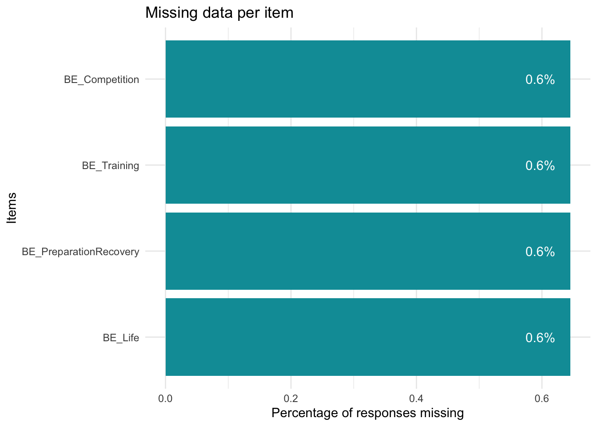
Code
#tile plot (response category frequency for the items)
RItileplot(BE_4items_data_rasch)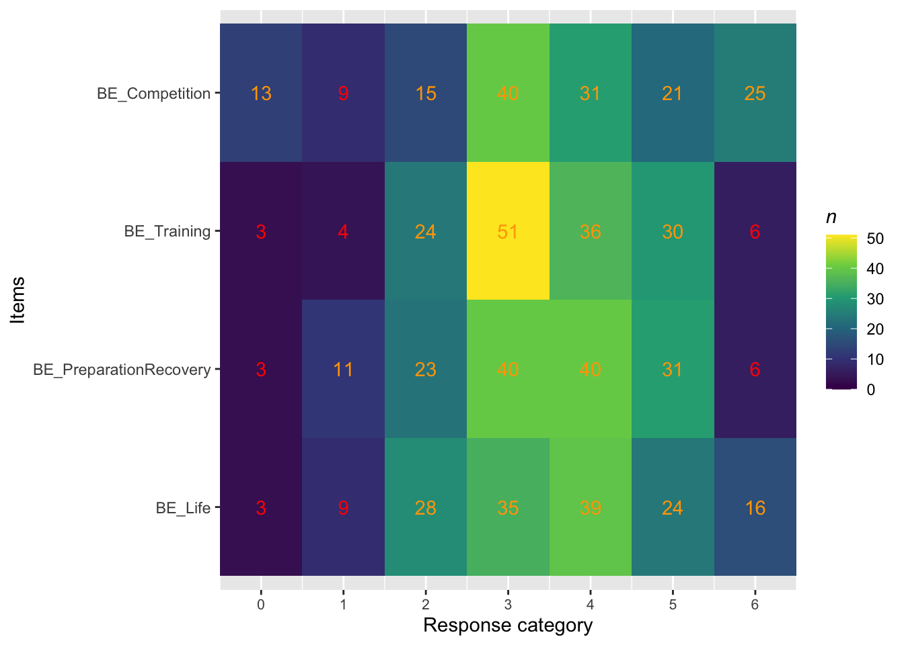
A test of homogeneity that assesses whether item parameters are homogeneous across all levels of theta.
Code
#conditional likelihood ratio tests (CLR)
#a test of homogeneity that assesses whether item parameters are homogeneous across all levels of theta
clr_tests(BE_4items_data_rasch, model = "PCM")
Conditional Likelihood Ratio Tests: clr df pvalue sig
overall 27.8 23 0.22 Code
| Item | InfitMSQ | Infit thresholds | OutfitMSQ | Outfit thresholds | Infit diff | Outfit diff | Relative location |
|---|---|---|---|---|---|---|---|
| BE_Competition | 0.974 | [0.763, 1.268] | 0.925 | [0.745, 1.387] | no misfit | no misfit | -0.17 |
| BE_Training | 0.923 | [0.845, 1.23] | 0.914 | [0.835, 1.198] | no misfit | no misfit | -0.21 |
| BE_PreparationRecovery | 0.979 | [0.829, 1.177] | 1.022 | [0.824, 1.188] | no misfit | no misfit | -0.21 |
| BE_Life | 1.155 | [0.856, 1.148] | 1.201 | [0.861, 1.162] | 0.007 | 0.039 | -0.38 |
| Note: | |||||||
|
MSQ values based on conditional calculations (n = 154 complete cases). Simulation based thresholds from 94 simulated datasets. |
Code
#conditional item characteristic curves
ICCplot(
as.data.frame(BE_4items_data_rasch),
itemnumber = 1:4,
itemdescrip = c("Competition", "Training", "Preparation & Recovery", "Life"),
method = "cut"
)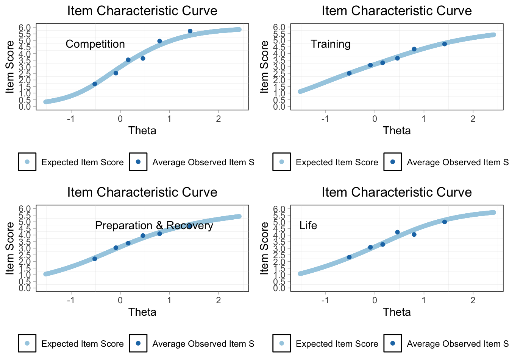
[1] "Please press Zoom on the Plots window to see the plot"Code
#item restscores
RIrestscore(BE_4items_data_rasch)| Item | Observed value | Model expected value | Absolute difference | Adjusted p-value (BH) | Statistical significance level | Location | Relative location |
|---|---|---|---|---|---|---|---|
| BE_Competition | 0.39 | 0.33 | 0.06 | 0.643 | 0.08 | -0.17 | |
| BE_Training | 0.35 | 0.30 | 0.05 | 0.643 | 0.03 | -0.21 | |
| BE_PreparationRecovery | 0.31 | 0.30 | 0.01 | 0.826 | 0.03 | -0.21 | |
| BE_Life | 0.23 | 0.31 | 0.08 | 0.643 | -0.14 | -0.38 |
Code
#loadings on first residual contrast (assessing clusters in data or multidimensionality)
RIloadLoc(BE_4items_data_rasch)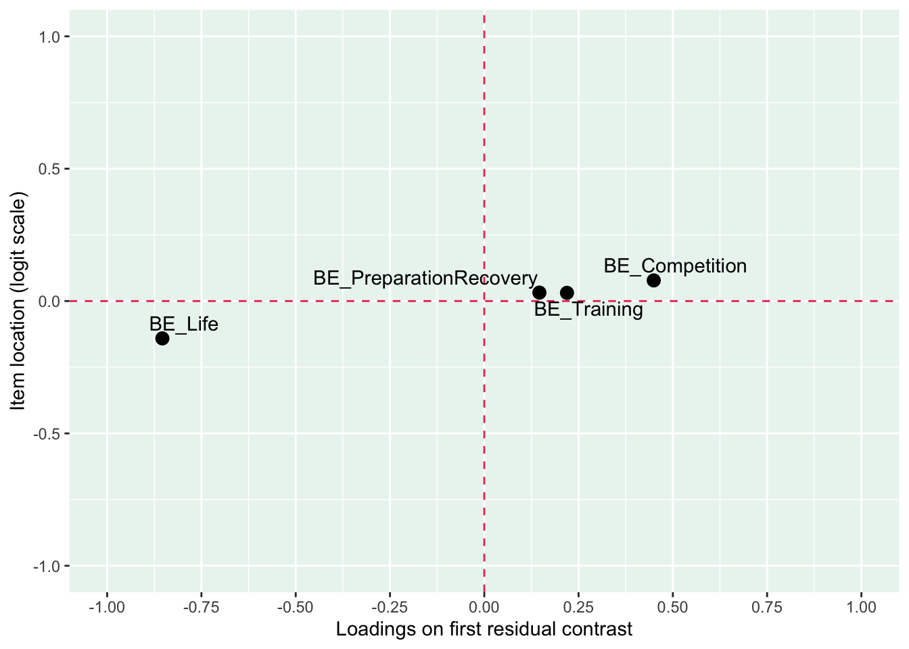
Code
#residual correlations
resid_cor_BE_4items <- RIgetResidCor(BE_4items_data_rasch, iterations = 800, cpu = 10)
RIresidcorr(BE_4items_data_rasch, cutoff = resid_cor_BE_4items$p99) | BE_Competition | BE_Training | BE_PreparationRecovery | BE_Life | |
|---|---|---|---|---|
| BE_Competition | ||||
| BE_Training | -0.05 | |||
| BE_PreparationRecovery | -0.17 | -0.17 | ||
| BE_Life | -0.34 | -0.18 | -0.17 | |
| Note: | ||||
|
Relative cut-off value is 0.07, which is 0.252 above the average correlation (-0.181). Correlations above the cut-off are highlighted in red text. |
Code
#partial gamma coefficients (assessing local independence)
clean_names <- janitor::clean_names
filter <- dplyr::filter
RIpartgamLD(BE_4items_data_rasch) #shows only significant results[1] "No statistically significant local dependency found."Code
partgam_LD(as.data.frame(BE_4items_data_rasch)) #shows all output, also non-significant results Item1 Item2 gamma se pvalue padj.BH
1 BE_Competition BE_Training 0.1186 0.1151 0.3030 1
2 BE_Competition BE_PreparationRecovery 0.0899 0.1055 0.3937 1
3 BE_Competition BE_Life -0.0438 0.1156 0.7049 1
4 BE_Training BE_PreparationRecovery -0.0751 0.1017 0.4598 1
5 BE_Training BE_Life 0.0591 0.1175 0.6154 1
6 BE_PreparationRecovery BE_Life 0.0517 0.1115 0.6430 1
sig lower upper
1 -0.1070 0.3442
2 -0.1167 0.2966
3 -0.2704 0.1828
4 -0.2744 0.1241
5 -0.1713 0.2894
6 -0.1668 0.2701
Item1 Item2 gamma se pvalue padj.BH
1 BE_Training BE_Competition 0.0058 0.1243 0.9626 1
2 BE_PreparationRecovery BE_Competition 0.1006 0.1071 0.3476 1
3 BE_PreparationRecovery BE_Training -0.0678 0.1130 0.5486 1
4 BE_Life BE_Competition -0.1433 0.1132 0.2057 1
5 BE_Life BE_Training -0.0754 0.1083 0.4860 1
6 BE_Life BE_PreparationRecovery -0.0590 0.1078 0.5840 1
sig lower upper
1 -0.2378 0.2495
2 -0.1093 0.3105
3 -0.2892 0.1536
4 -0.3651 0.0786
5 -0.2877 0.1368
6 -0.2703 0.1522Code
#targeting
RItargeting(BE_4items_data_rasch)
Code
#item hierarchy
itemlabels <- data.frame(itemnr = names(BE_4items_data_rasch), item = NA)
RIitemHierarchy(BE_4items_data_rasch)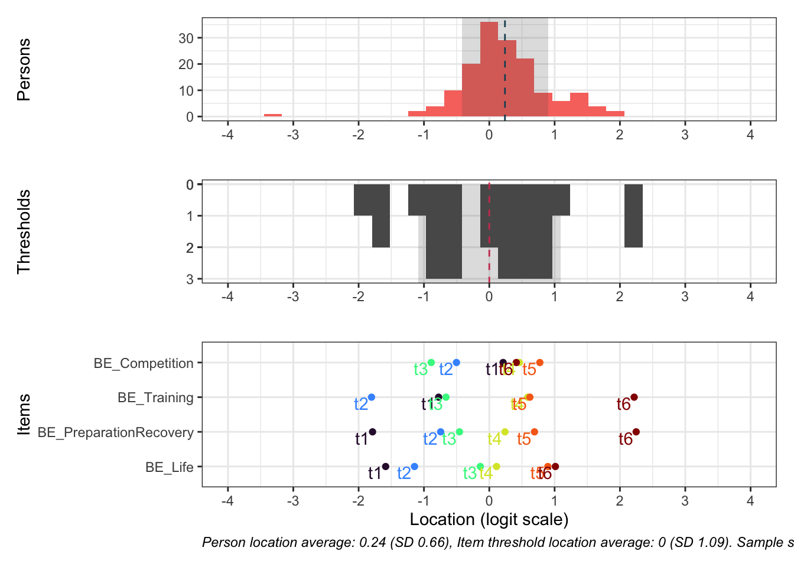
Code
#threshold locations
RIitemparams(BE_4items_data_rasch)| Threshold 1 | Threshold 2 | Threshold 3 | Threshold 4 | Threshold 5 | Threshold 6 | Item location | |
|---|---|---|---|---|---|---|---|
| BE_Competition | 0.21 | -0.50 | -0.89 | 0.46 | 0.77 | 0.41 | 0.08 |
| BE_Training | -0.78 | -1.80 | -0.66 | 0.59 | 0.62 | 2.22 | 0.03 |
| BE_PreparationRecovery | -1.79 | -0.74 | -0.46 | 0.24 | 0.69 | 2.25 | 0.03 |
| BE_Life | -1.59 | -1.15 | -0.14 | 0.11 | 0.90 | 1.01 | -0.14 |
| Note: | |||||||
| Item location is the average of the thresholds for each item. |
Code
#analysis of response categories
RIitemCats(BE_4items_data_rasch, items = "all", xlims = c(-5, 5), legend = "left") 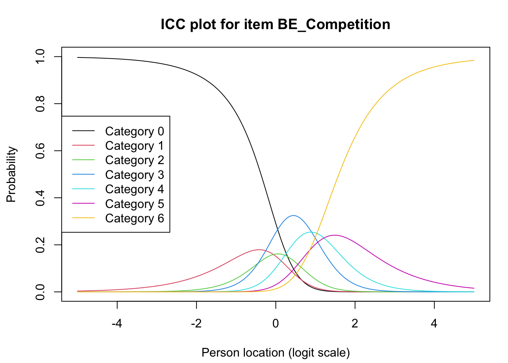

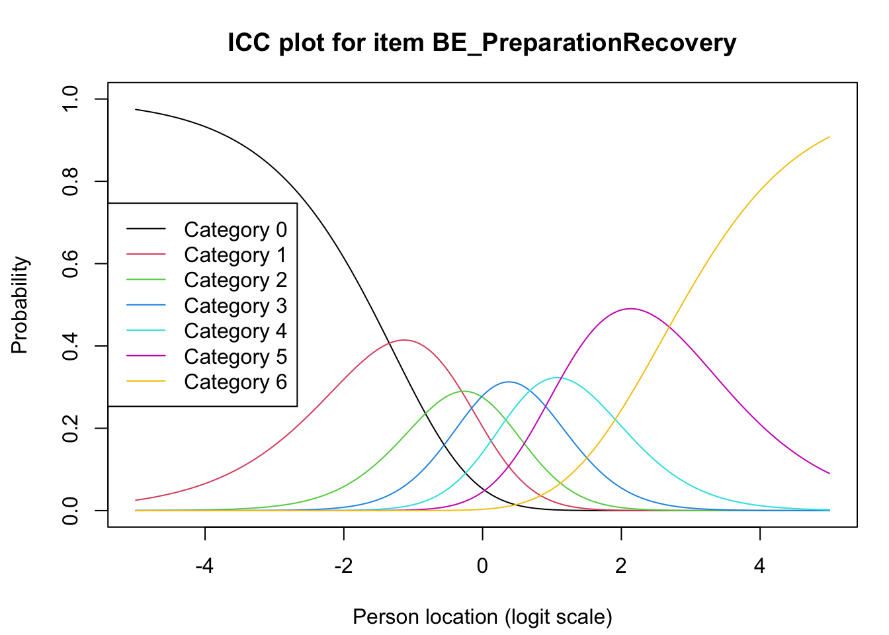
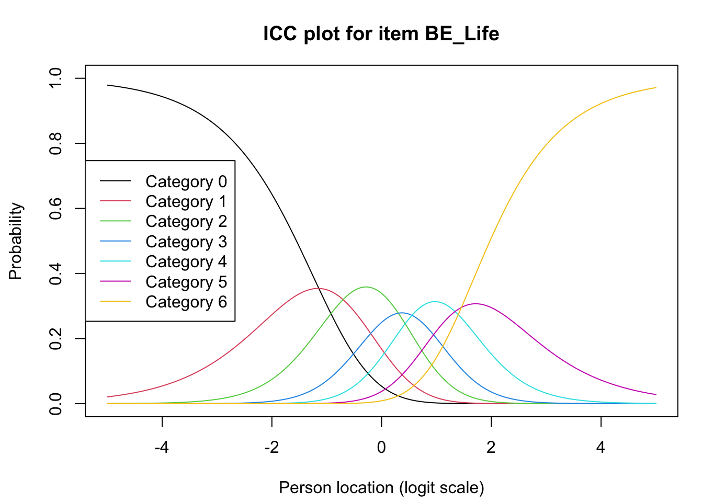
Code
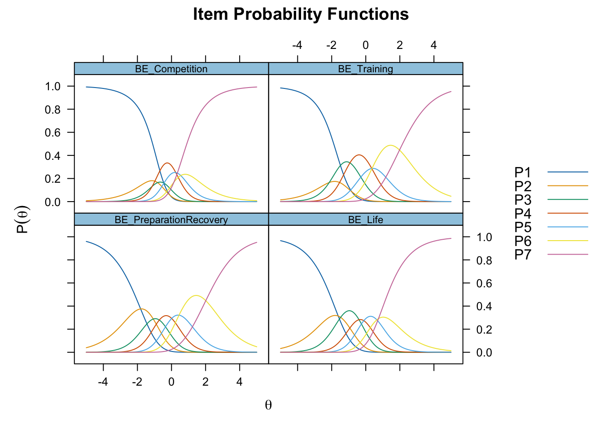
Code
#note: response categories have been analyzed using RIitemCats() function (in the easyRasch package) that estimates ICC plots using the eRm package. When there are response categories with fewer than 3 responses the easyRasch package uses estimation from the mirt package instead in the RIitemparams() and RItargeting() functions, and explain potential slight variations found in those outputs compared to the RIitemCats output. For transparency, ICC plots from the mirt package are therefore also displayed. Response category analysis was however consequently conducted using the RIitemCats() function that uses estimation from the eRm package. The first output shows without sample PSI and second output with sample PSI.
Based on the analysis of response categories these will be recoded and then undergo Rasch analysis again. Response categories will be recoded with the aim to be ordered, and scale steps will also be merged so that each kept scale step has the highest probability of being used at some point on the logit scale.
2.3 Re-analysis of Bulls Eye recoded version
Based on the analysis of the response categories and threshold locations, scale steps were merged and recoded so that each kept scale step had the highest response probability at some point on the logit scale, and also so that all threshold locations were in the right order for all items. Recoded items were given new names with the abbreviation “_recoded”.
Code
#adding recoded bulls eye items
recode <- dplyr::recode
bulls_eye_merged_superfinal_data <- bulls_eye_merged_superfinal_data %>%
mutate(
# Recoding BE_Competition (0+1; 2+3; 4+5)
BE_Competition_recoded = recode(
BE_Competition,
`0` = 0, `1` = 0,
`2` = 1, `3` = 1,
`4` = 2, `5` = 2,
`6` = 3
),
# Recoding BE_Training (0+1)
BE_Training_recoded = recode(
BE_Training,
`0` = 0, `1` = 0,
`2` = 1,
`3` = 2,
`4` = 3,
`5` = 4,
`6` = 5
))Code
#preparing item data frame for BE recoded
BE_4items_data_rasch_recoded <- bulls_eye_merged_superfinal_data[, c(
"BE_Competition_recoded",
"BE_Training_recoded",
"BE_PreparationRecovery",
"BE_Life"
)]
min.responses <- 1
BE_4items_data_rasch_recoded <- BE_4items_data_rasch_recoded %>%
filter(4 - rowSums(is.na(
select(
.,
"BE_Competition_recoded",
"BE_Training_recoded",
"BE_PreparationRecovery",
"BE_Life"
)
)) >= min.responses)Code
#re-analysis of response categories using BE recoded
RIitemCats(BE_4items_data_rasch_recoded, items = "all", xlims = c(-5, 5), legend = "left")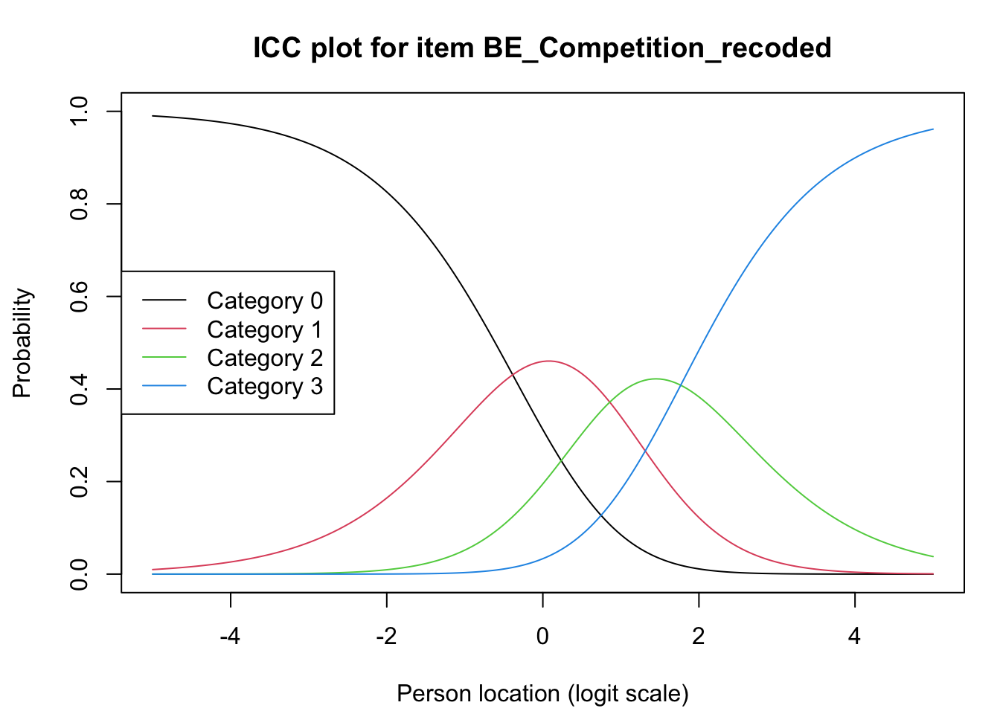

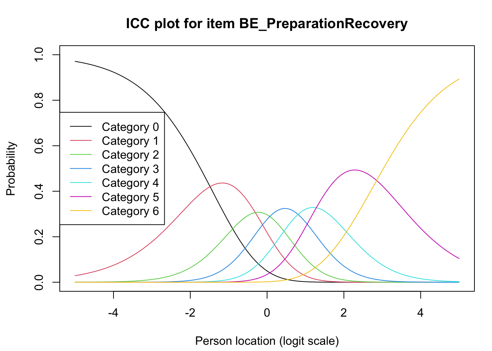
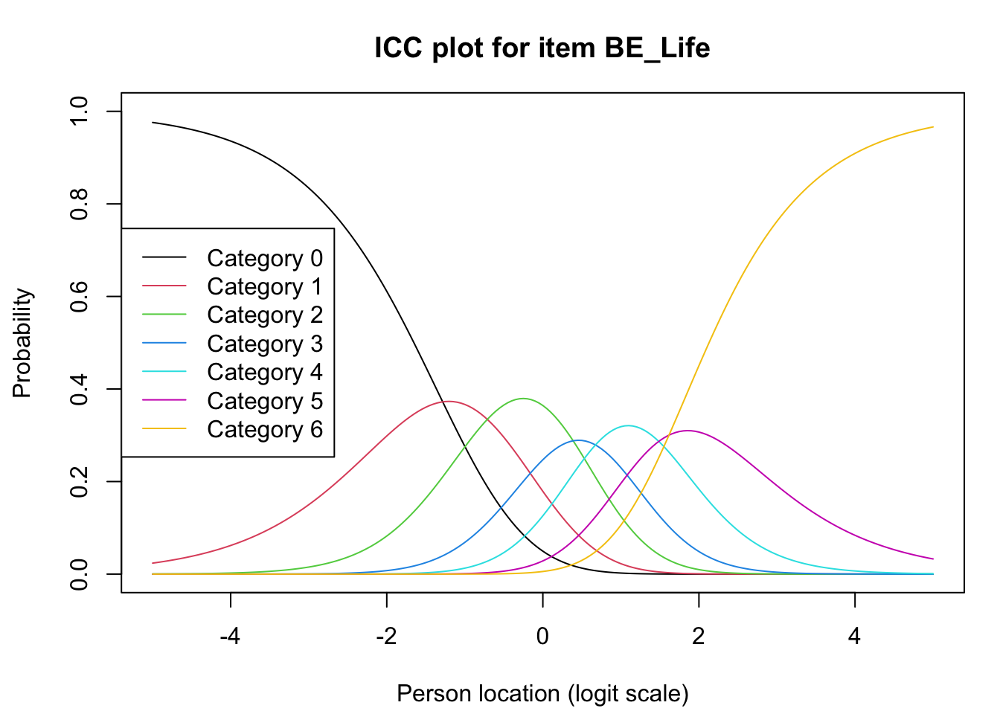
Code
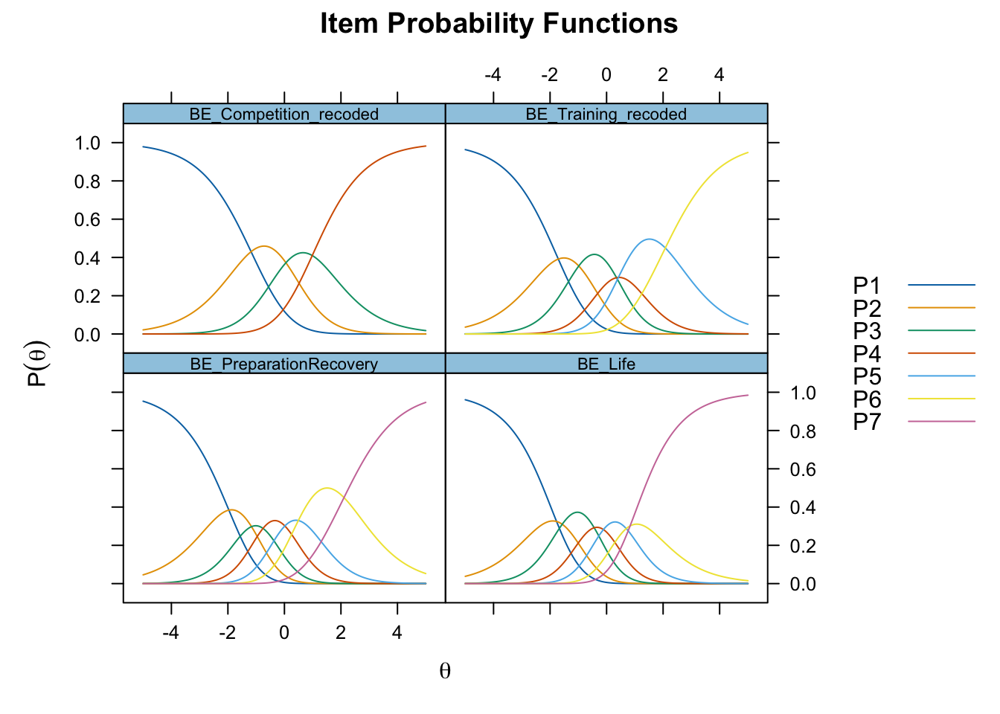
Code
#note: response categories have been analyzed using RIitemCats() function (in the easyRasch package) that estimates ICC plots using the eRm package. When there are response categories with fewer than 3 responses the easyRasch package uses estimation from the mirt package instead in the RIitemparams() and RItargeting() functions, and explain potential slight variations found in those outputs compared to the RIitemCats output. For transparency, ICC plots from the mirt package are therefore also displayed. Response category analysis was however consequently conducted using the RIitemCats() function that uses estimation from the eRm package. Code
#tile plot (response category frequency for the recoded items)
RItileplot(BE_4items_data_rasch_recoded)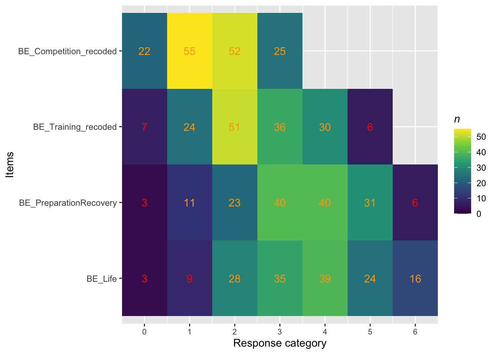
Code
itemlabels <- data.frame(itemnr = names(BE_4items_data_rasch_recoded), item = NA)
RIitemcols(BE_4items_data_rasch_recoded)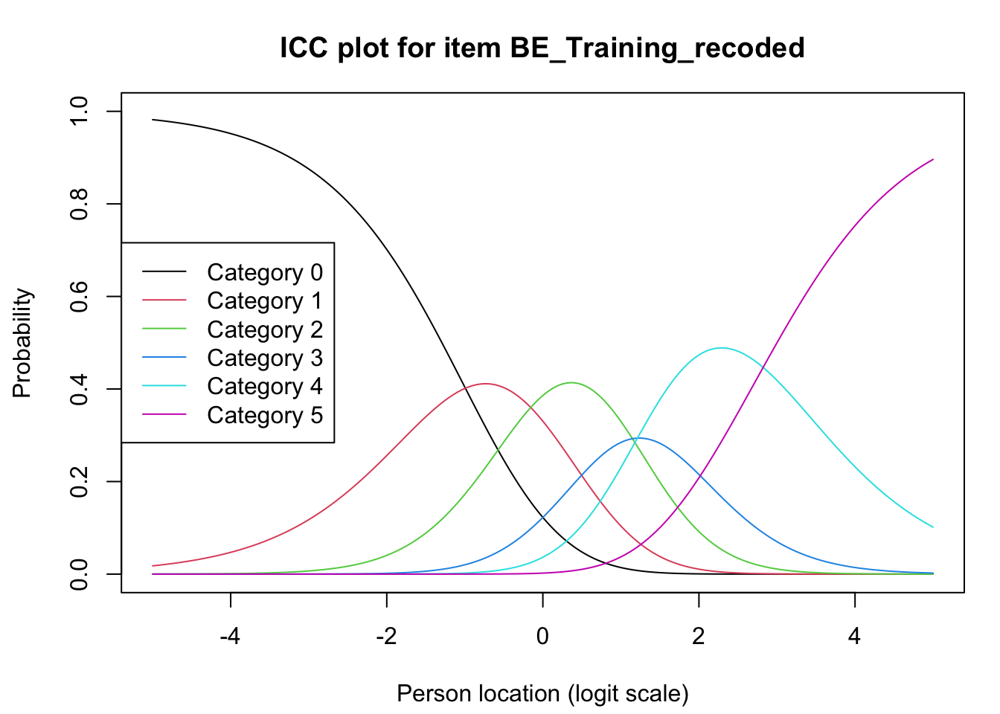
Code
#conditional likelihood ratio tests (CLR)
#a test of homogeneity that assesses whether item parameters are homogeneous across all levels of theta
clr_tests(BE_4items_data_rasch_recoded, model = "PCM")
Conditional Likelihood Ratio Tests: clr df pvalue sig
overall 27.3 19 0.098 . Code
| Item | InfitMSQ | Infit thresholds | OutfitMSQ | Outfit thresholds | Infit diff | Outfit diff | Relative location |
|---|---|---|---|---|---|---|---|
| BE_Competition_recoded | 0.829 | [0.818, 1.179] | 0.819 | [0.816, 1.221] | no misfit | no misfit | -0.04 |
| BE_Training_recoded | 0.984 | [0.805, 1.161] | 0.965 | [0.784, 1.228] | no misfit | no misfit | 0.02 |
| BE_PreparationRecovery | 1.036 | [0.807, 1.177] | 1.074 | [0.798, 1.181] | no misfit | no misfit | -0.25 |
| BE_Life | 1.172 | [0.817, 1.183] | 1.226 | [0.822, 1.187] | no misfit | 0.039 | -0.42 |
| Note: | |||||||
|
MSQ values based on conditional calculations (n = 154 complete cases). Simulation based thresholds from 92 simulated datasets. |
Code
#re-analysis of conditional item characteristic curves
ICCplot(
as.data.frame(BE_4items_data_rasch_recoded),
itemnumber = 1:4,
itemdescrip = c(
"Competition_recoded",
"Training_recoded",
"Preparation & Recovery",
"Life"
),
method = "cut"
)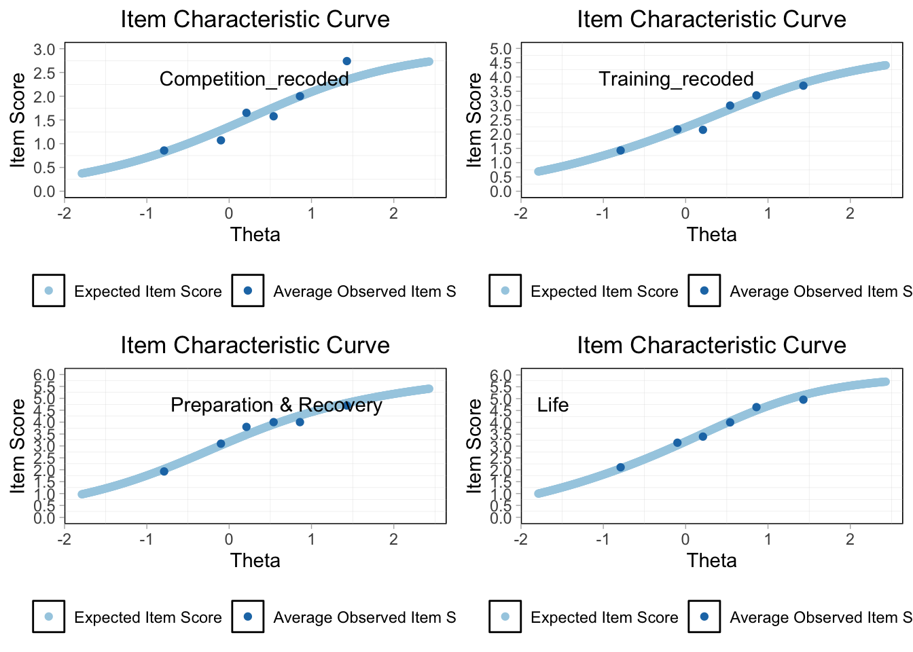
[1] "Please press Zoom on the Plots window to see the plot"Code
#re-analyzing item restscores
RIrestscore(BE_4items_data_rasch_recoded)| Item | Observed value | Model expected value | Absolute difference | Adjusted p-value (BH) | Statistical significance level | Location | Relative location |
|---|---|---|---|---|---|---|---|
| BE_Competition_recoded | 0.43 | 0.29 | 0.14 | 0.173 | 0.16 | -0.04 | |
| BE_Training_recoded | 0.34 | 0.32 | 0.02 | 0.780 | 0.22 | 0.02 | |
| BE_PreparationRecovery | 0.30 | 0.33 | 0.03 | 0.780 | -0.05 | -0.25 | |
| BE_Life | 0.26 | 0.34 | 0.08 | 0.482 | -0.22 | -0.42 |
Code
#re-analyzing loadings on the first residual contrast (assessing clusters in data or multidimensionality)
RIloadLoc(BE_4items_data_rasch_recoded)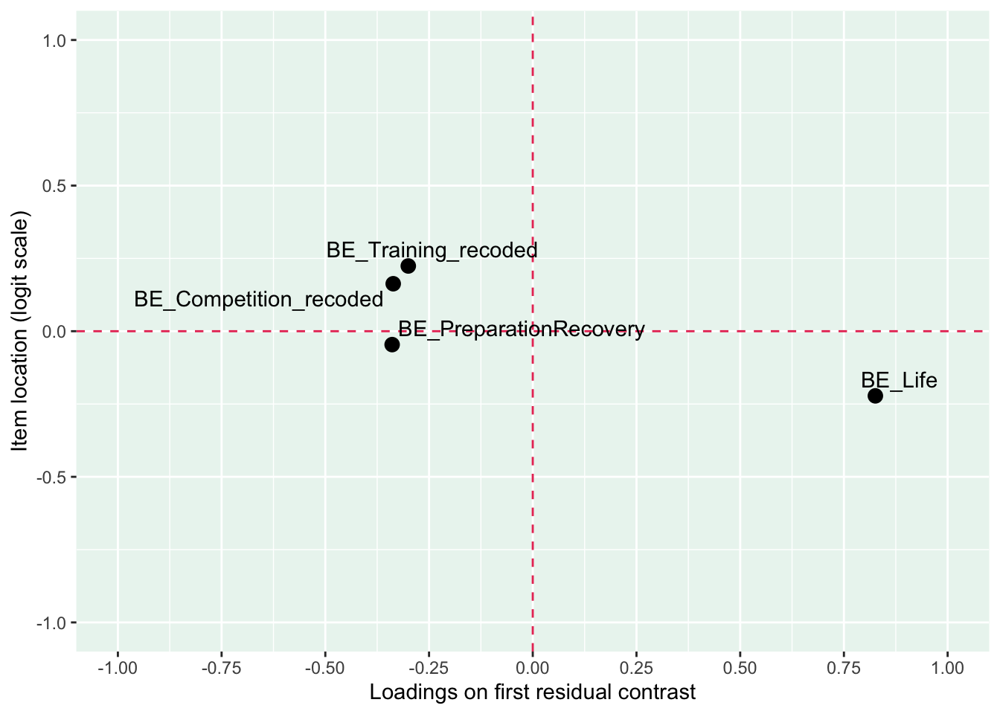
Code
#re-analysis of residual correlations
resid_cor_BE_4items_recoded <- RIgetResidCor(BE_4items_data_rasch_recoded,
iterations = 800,
cpu = 10)
RIresidcorr(BE_4items_data_rasch_recoded, cutoff = resid_cor_BE_4items_recoded$p99) | BE_Competition_recoded | BE_Training_recoded | BE_PreparationRecovery | BE_Life | |
|---|---|---|---|---|
| BE_Competition_recoded | ||||
| BE_Training_recoded | 0.06 | |||
| BE_PreparationRecovery | -0.06 | -0.24 | ||
| BE_Life | -0.22 | -0.28 | -0.29 | |
| Note: | ||||
|
Relative cut-off value is 0.094, which is 0.265 above the average correlation (-0.171). Correlations above the cut-off are highlighted in red text. |
Code
#re-analysis of partial gamma coefficients (assessing local independence)
RIpartgamLD(BE_4items_data_rasch_recoded) #shows only significant results[1] "No statistically significant local dependency found."Code
partgam_LD(as.data.frame(BE_4items_data_rasch_recoded)) #shows all output, also non-significant results Item1 Item2 gamma se pvalue padj.BH
1 BE_Competition_recoded BE_Training_recoded 0.2290 0.1244 0.0657 0.7881
2 BE_Competition_recoded BE_PreparationRecovery 0.1706 0.1198 0.1545 1.0000
3 BE_Competition_recoded BE_Life 0.0256 0.1373 0.8523 1.0000
4 BE_Training_recoded BE_PreparationRecovery -0.0745 0.1099 0.4981 1.0000
5 BE_Training_recoded BE_Life -0.0472 0.1175 0.6878 1.0000
6 BE_PreparationRecovery BE_Life 0.0383 0.1099 0.7275 1.0000
sig lower upper
1 -0.0148 0.4728
2 -0.0642 0.4055
3 -0.2435 0.2946
4 -0.2900 0.1410
5 -0.2774 0.1830
6 -0.1771 0.2537
Item1 Item2 gamma se pvalue padj.BH
1 BE_Training_recoded BE_Competition_recoded 0.0294 0.1335 0.8259 1
2 BE_PreparationRecovery BE_Competition_recoded 0.1127 0.1230 0.3598 1
3 BE_PreparationRecovery BE_Training_recoded -0.0912 0.1192 0.4440 1
4 BE_Life BE_Competition_recoded -0.1722 0.1238 0.1642 1
5 BE_Life BE_Training_recoded -0.0935 0.1069 0.3813 1
6 BE_Life BE_PreparationRecovery -0.1069 0.1095 0.3288 1
sig lower upper
1 -0.2323 0.2910
2 -0.1285 0.3538
3 -0.3248 0.1424
4 -0.4148 0.0704
5 -0.3030 0.1159
6 -0.3216 0.1077Code
#targeting
RItargeting(BE_4items_data_rasch_recoded)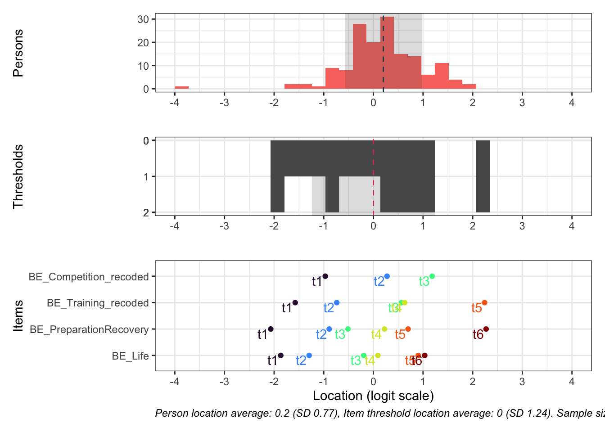
Code
#item hierarchy
itemlabels <- data.frame(itemnr = names(BE_4items_data_rasch_recoded), item = NA)
RIitemHierarchy(BE_4items_data_rasch_recoded)
Code
#threshold locations
RIitemparams(BE_4items_data_rasch_recoded)| Threshold 1 | Threshold 2 | Threshold 3 | Threshold 4 | Threshold 5 | Threshold 6 | Item location | |
|---|---|---|---|---|---|---|---|
| BE_Competition_recoded | -0.97 | 0.28 | 1.18 | NA | NA | NA | 0.16 |
| BE_Training_recoded | -1.58 | -0.74 | 0.56 | 0.63 | 2.24 | NA | 0.22 |
| BE_PreparationRecovery | -2.07 | -0.89 | -0.51 | 0.22 | 0.70 | 2.27 | -0.05 |
| BE_Life | -1.87 | -1.29 | -0.20 | 0.09 | 0.90 | 1.03 | -0.22 |
| Note: | |||||||
| Item location is the average of the thresholds for each item. |
BE_Competition_recoded is borderline overfit to the model (see the conditional item fit analysis) and possibly redundant. It is however still kept in the instrument. Beside it being “only” borderline redundant from a statistical perspective, there are also favorable reasons for keeping the domain related to competition due to content and face validity reasons.
2.4 Differential Item Functioning (DIF) and test-retest investigation
DIF investigates invariance, and more specifically whether item functioning varies between subgroups of participants or not. DIF variables to be investigated are age, sex, competition level, sport type (individual/team sport), and high/low scorers on the instrument. All DIF variables will be transformed into binary categories. Test-retest reliability will also be investigated within the framework of DIF. Below is data preparation and analysis for each DIF variable.
Code
#one participants did not respond to the dartboard value domains in BEA (used in the psychometric evaluation), but the other parts of BEA and also the other scales in this study and was therefore kept in the sample. Needs to be removed here though so the number of rows in the data frame of BEA items equals the number of rows for the DIF variables.
filter <- dplyr::filter
na_users <- bulls_eye_merged_superfinal_data %>%
filter(
is.na(BE_Competition) |
is.na(BE_Training) |
is.na(BE_PreparationRecovery) |
is.na(BE_Life)
) %>%
select(Användarnamn)
#creating data frame for the DIF analyses with one participant removed that did not complete the BEA items (N = 154)
bulls_eye_merged_superfinal_data_DIF <- bulls_eye_merged_superfinal_data %>%
filter(!(Användarnamn %in% na_users$Användarnamn))Code
#Age DIF variable data preparation
clean_names <- janitor::clean_names
median_age <- median(bulls_eye_merged_superfinal_data_DIF$Demografi.Alder)
print(median_age)[1] 23Code
[1] 13Code
#13 participants is 23 years of age
range(bulls_eye_merged_superfinal_data_DIF$Demografi.Alder)[1] 15 50Code
#age range is 15 to 50 years
#age variable is split by median using an inclusive split in which
#participants aged 23 is included in the younger group
#creating age_group variable
bulls_eye_merged_superfinal_data_DIF$age_group <- ifelse(bulls_eye_merged_superfinal_data_DIF$Demografi.Alder <= median_age,
"Younger",
"Older")
dif.age <- factor(bulls_eye_merged_superfinal_data_DIF$age_group)
#Age DIF analysis
RIdifTable(BE_4items_data_rasch_recoded, dif.age)[1] "No statistically significant DIF found."Code
#Sex DIF variable data preparation
table(bulls_eye_merged_superfinal_data_DIF$Demografi.Kon)
1 2
65 89 Code
#65 females and 89 males
dif.sex <- factor(bulls_eye_merged_superfinal_data_DIF$Demografi.Kon)
#Sex DIF analysis
RIdifTable(BE_4items_data_rasch_recoded, dif.sex)[1] "No statistically significant DIF found."Code
#creating binary variable for competition level
#available competition levels in the current sample are
#junior elite, sectional, national, international
#these are categorized as "Lower level competition" (junior elite + sectional)
#and "Higher competition level" (national + international)
bulls_eye_merged_superfinal_data_DIF$comp_level_binary <- ifelse(
bulls_eye_merged_superfinal_data_DIF$comp_level %in% c("junior elite", "sectional"),
"Lower competition level",
"Higher competition level"
)
table(bulls_eye_merged_superfinal_data_DIF$comp_level_binary)
Higher competition level Lower competition level
92 62 Code
#92 higher comp level, 62 lower comp level
dif.comp_level <- factor(bulls_eye_merged_superfinal_data_DIF$comp_level_binary)
#Competition level DIF analysis
RIdifTable(BE_4items_data_rasch_recoded, dif.comp_level)[1] "No statistically significant DIF found."Code
#Sport type DIF variable data preparation (individual vs team sport)
table(bulls_eye_merged_superfinal_data_DIF$Demografi.Idrotttyp)
1 2
19 135 Code
#19 individual and 135 team sport athletes
dif.sport_type <- factor(bulls_eye_merged_superfinal_data_DIF$Demografi.Idrotttyp)
#Sport type DIF analysis
RIdifTable(BE_4items_data_rasch_recoded, dif.sport_type)[1] "No statistically significant DIF found."Code
#Currently injured (or not) DIF variable data preparation
table(bulls_eye_merged_superfinal_data_DIF$Demografi.SkadadNu)
0 1
125 29 Code
#29 athletes are currently injured, 125 are not
dif.injury <- factor(bulls_eye_merged_superfinal_data_DIF$Demografi.SkadadNu)
#Injury DIF analysis
RIdifTable(BE_4items_data_rasch_recoded, dif.injury)[1] "No statistically significant DIF found."In the output, Group 1 is low scorers on BEA, and Group 2 is high scorers on BEA. Groups are split by median.
Code
#DIF analysis for high vs low scorers on the bulls eye instrument (group 1 = low scorers; group 2 = high scorers)
iarm::item_obsexp(PCM(BE_4items_data_rasch_recoded))Score group 1:
mean obs mean exp std.res sig
BE_Competition_recoded 0.9857 1.0936 -1.1706
BE_Training_recoded 1.8714 1.8402 0.2909
BE_PreparationRecovery 2.6286 2.6335 -0.0411
BE_Life 2.7286 2.6333 0.7907
Score group 2:
mean obs mean exp std.res sig
BE_Competition_recoded 1.988 1.897 1.065
BE_Training_recoded 3.048 3.075 -0.261
BE_PreparationRecovery 4.145 4.129 0.154
BE_Life 4.229 4.309 -0.740 Code
#Test-retest reliability using DIF, data preparation and analysis
#bulls eye "test2" equals time point 2 testing in the code below
rename <- dplyr::rename
#creating df with bulls eye test 2 items selected
BE_4items_data_rasch_test2 <- bulls_eye_merged_superfinal_data_DIF[, c(
"Användarnamn",
"BE_Competition_test2",
"BE_Training_test2",
"BE_PreparationRecovery_test2",
"BE_Life_test2"
)]
columns_to_check <- c(
"BE_Competition_test2",
"BE_Training_test2",
"BE_PreparationRecovery_test2",
"BE_Life_test2"
)
#filter rows with at least one non-missing value in the specified columns
BE_4items_data_rasch_test2_filtered <- BE_4items_data_rasch_test2[rowSums(!is.na(BE_4items_data_rasch_test2[columns_to_check])) > 0, ]
#68 participants with a bulls eye time point 2 test
#rename time point 2 items as time point 1 + rename IDs
BE_4items_data_rasch_test2_filtered_renamed_items <- BE_4items_data_rasch_test2_filtered %>%
mutate(`Användarnamn` = paste0(`Användarnamn`, "_duplicate")) %>%
rename(
"BE_Competition" = "BE_Competition_test2",
"BE_Training" = "BE_Training_test2",
"BE_PreparationRecovery" = "BE_PreparationRecovery_test2",
"BE_Life" = "BE_Life_test2"
)
#adding DIF variable with value 1 for bulls eye time point 2
BE_4items_data_rasch_test2_filtered_renamed_items$test2_BE <- 1
#now onto preparing df for bulls eye test 1
BE_4items_data_rasch_test1 <- bulls_eye_merged_superfinal_data_DIF[, c(
"Användarnamn",
"BE_Competition",
"BE_Training",
"BE_PreparationRecovery",
"BE_Life"
)]
#adding DIF variable with value 0 for bulls eye time point 2
BE_4items_data_rasch_test1$test2_BE <- 0
#merging the two df
BE_4items_test1_test2_merged <- full_join(BE_4items_data_rasch_test1,
BE_4items_data_rasch_test2_filtered_renamed_items)
#applying the same recoded item structures that came out of the initial BE Rasch analysis (bulls eye recoded version)
BE_4items_test1_test2_merged <- BE_4items_test1_test2_merged %>%
mutate(
# Recoding BE_Competition (0+1; 2+3; 4+5)
BE_Competition_recoded = recode(
BE_Competition,
`0` = 0, `1` = 0,
`2` = 1, `3` = 1,
`4` = 2, `5` = 2,
`6` = 3
),
# Recoding BE_Training (0+1)
BE_Training_recoded = recode(
BE_Training,
`0` = 0, `1` = 0,
`2` = 1,
`3` = 2,
`4` = 3,
`5` = 4,
`6` = 5
))
#test-retest DIF investigation
BE_4items_test1_test2_DIF <- BE_4items_test1_test2_merged[, c(
"BE_Competition_recoded",
"BE_Training_recoded",
"BE_PreparationRecovery",
"BE_Life"
)]
dif.test_retest <- factor(BE_4items_test1_test2_merged$test2_BE)
RIdifTable(BE_4items_test1_test2_DIF, dif.test_retest)[1] "No statistically significant DIF found."